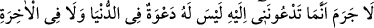
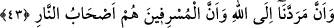
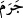

kabilinden bir üsluptur.
Burada uluhiyet gerçeğinin kesinlikle, onu bilmeyi gerektirecek bir delîle dayalı
olması gerektiği hissettirilmektedir.
“Ben ise sizi,” hem birbirlerinin dengi olan hiçbir mahlukun kendisine denk
olamayacağı, müşriklere azap etmeye de kadir “azîz”, hem de tevbe edip kendisine
yönelenleri “çok bağışlayan,” günahkârları bağışlamaya da gücü yeten “Allah’a dâvet
ediyorum.”
43. Gerçek şu ki, sizin beni dâvet ettiğiniz şeyin dünyada da ahirette de dâvete
değer bir tarafı yoktur. Dönüşümüz Allah’adır, aşırı gidenler de ateş ehlinin
kendileridir.
“Gerçek şu ki, sizin beni” kendisine kulluk edip Allah’a ortak koşmaya “dâvet
ettiğiniz şeyin dünyada da âhirette de dâvete değer bir tarafı yoktur.”
Âyetin başındaki “ ” harfi, dâvet ettikleri şirk ve inkârı reddetmektedir. “
” ise,
“gerçekleşti” anlamında bir fiil-i mazidir. Fâili ise, sonrasındaki cümledir. Mânâ
şöyledir: Şurası kesin ve gerçektir ki sizin tanrılarınızın insanları kendilerine kulluk
etmeye çağırmaya asla güçleri yetmez. Oysa bir mâbûd gerek peygamber göndermek
gerekse kitap indirmek suretiyle insanları kendisine kulluğa çağırabilmelidir. Putlarda
bu özellik yoktur. Çünkü bunlar dünyada başkalarını dâvet etmeye gücü yetmeyen cansız
varlıklardır. Âhirette de, Allah’ın onları konuşabilen canlı bir varlık olarak yeniden
yaratması durumunda bizzat kendileri, kendilerine kulluk etmiş olanlardan uzak
duracaklardır.
Ya da mânâ şöyledir: Kesin ve gerçek olan şudur ki, çağırdığınız bu putların çağrılara
kulak vermesi asla söz konusu değildir. Yâni ne dünyada kendilerine yapılan sağlık,
zenginlik, uzun ömür gibi çağrılara icâbet edebilirler ne de âhirette âbidlerini ateşten
kurtarıp derecelerini yükseltmeye güçleri yeter. Bir âyette buyurulduğu gibi: “Şayet
bunlara duâ etseniz, duanızı duymazlar. Duysalar da size karşılık veremezler.”
(Fâtır 35/14) Kendisine duâ edenlerin duâsına icâbet edemeyen bu putlar hiç tanrı
olabilir mi! Rabb dediğiniz, duâlara icâbet edebilmeli, ihtiyaçları giderebilmelidir.
“
”nin “kazandı” anlamında olduğu, fâilinin ise altında gizli bulunduğu da
söylenmiştir. Buna göre, küfür ve şirke yönelik bir çağrı tamamen boş, hiçbir kazancı
olmayan bir çağrıdır. Yâni böyle bir çağrının elde edeceği şey, kendisine çağrılanın
çağrısının bâtıl olduğudur. Şöyle ki: Böyle bir çağrıdan, ancak, böyle biri için çağrı
yapmanın ne kadar bâtıl olduğu sonucu çıkabilir. Bir nevi şöyle denmiş olmaktadır: Siz
zannediyorsunuz ki beni şirke çağırmanız, beni etkileyip şirke yönlendirecek. Oysa bu